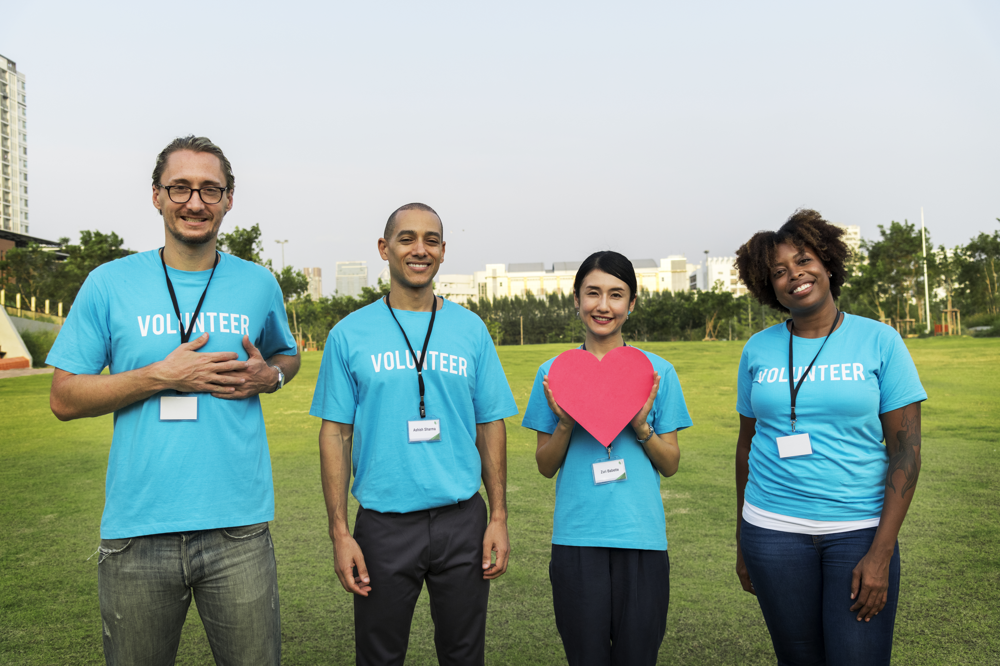

History
The Community Impact Inniative is a small but passionate organization dedicated, to supporting people, communities and local environments, through coordinating and organizing events online. The organization was founded in 2014 by Roger Hemmings and Elina Vascawtcha. Today the organization helps organize over 150 events each year, and is proud to bring in more aspiring volunteers.
Staff

Designed By: rawpixel www.Magnific.com
- Roger Hemmings
- Director of Operations
- Elina Vascawtcha
- Event Coordinator
- Alari Hughes
- Technical Expert
- Edwin Mattess
- Resources Coordinator